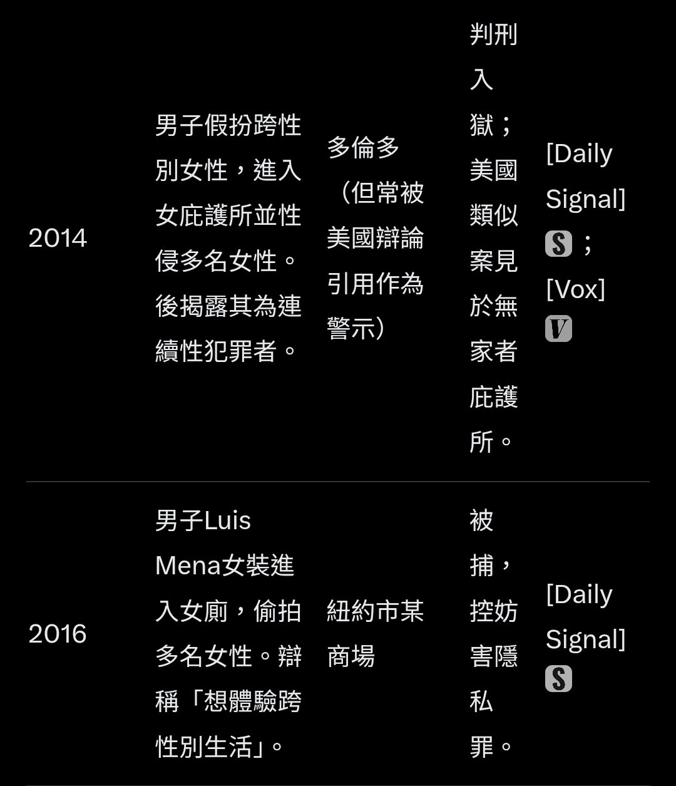
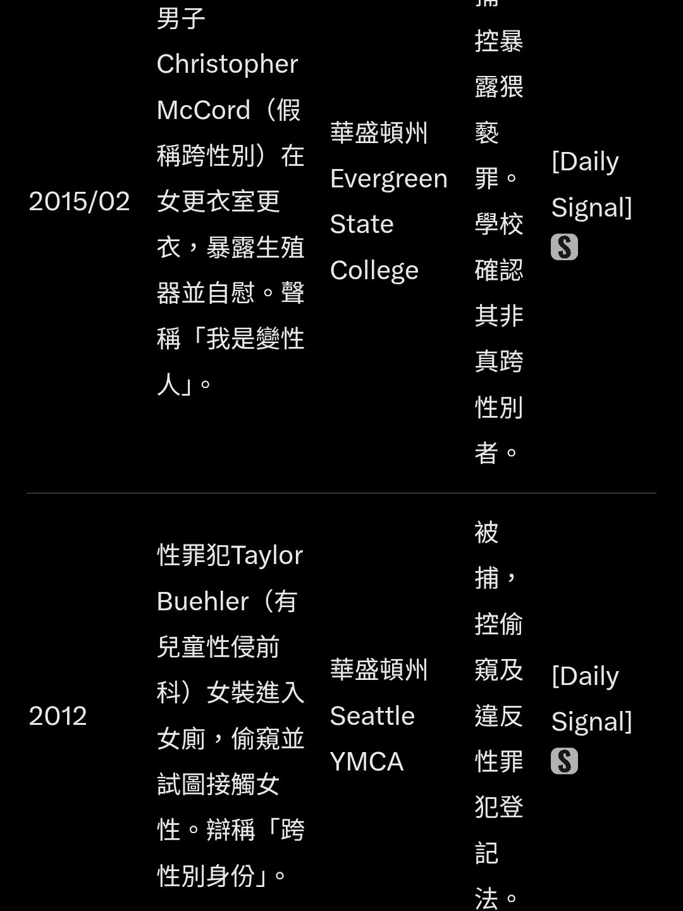
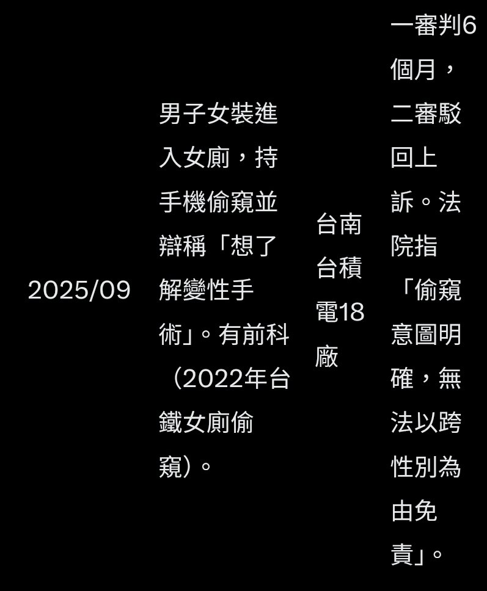

凌嘉欣🍥
@LingJiaXin233
@OwOb_QAQ @xmin240286 ……不是你有没有看到我争论的是什么



OwO!!!!
@OwOb_QAQ
@LingJiaXin233 @xmin240286 這些是聲稱跨性別但依然被捕，請問這些也是媒體壓力嗎？你拿美國舉例但美國也不是一個性少數開放的國家，本來就不讓跨性別進對應廁所的。
我也幫你找到案例了「加拿大男子進更衣室拍攝兒童色情聲稱跨性別沒遭到逮捕」這案中兒童的母親甚至建立委員會、在社交媒體宣傳也沒用
https://t.co/dELPIRY0tA https://t.co/T3blGTklDM